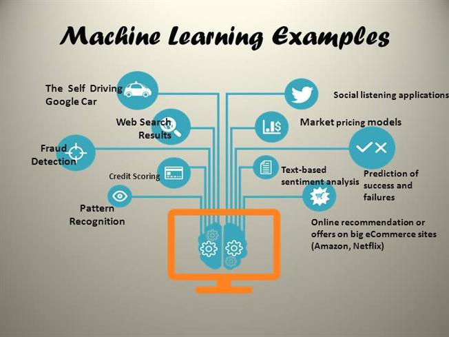

Artificial Intelligence
General Information
Artificial intelligence is a way of training software over a series of “examples.” These examples can be statistical models, pictures, videos, text or emotional behavioral responses. First a training data set is used, and the algorithm developed. A collection of raw data is input and processed. The accuracy of the processed data is based on the scope of the training data and the complexity of the algorithm.
Life Cycle
Ideas of artificial intelligence have most likely been around even before computers existed. Imagine a mill worker performing mundane tasks that the worker dreamed could be simplified by automation. If only the machine could think on its own! First accepted as a discipline in 1955, it has grown to become a popular field of study.
Improvement
In May 1997 the artificial intelligence computer “Deep Blue” (pictured below) became the first computer known to man that was able to defeat a world champion chess player.2 This was considered a great achievement in the advancement of machine learning.
Features
It has developed more accurate weather models, developed protein synthesis models used in bio-medical engineering, created more fuel efficient vehicles, increased manufacturing efficiency, predicted economics statistics and presidential election outcomes. Created autonomous vehicles and unmanned military aircraft, the list truly goes on and on. A lot people might not realize the ergonomics of an expensive office chair may have been designed based on predictions from artificial intelligence.
Evolution
Artificial intelligence/machine learning will continue to become more popular. The programming involved does not require intimate knowledge of computer science or engineering. The most important piece of the puzzle comes from
.MOV Extenstions
General Information
A MOV file is a common multimedia container filer format developed by Apple and compatible with both Macintosh and Windows platforms. It can be used to store text, audio and video. The file hierarchy makes QuickTime very efficient at editing. MOV files commonly use the MPEG-4 codec for compression. A file with the MOV file extension is an Apple QuickTime Movie file that’s stored in a QuickTime File Format (QTFF) container file. Although, QuickTime and MP4 use the same MPEG-4 formats, MP4 has much more support. Many hardware devices do not contain software allowing them to parse the QTFF data.
Life Cycle
Apple released the .mov file format in 1998, and although it has declined in popularity, it is used by media creators. Due to its proprietary license, it’s capabilities cannot be enhance by the open source community. It is a powerful cross platform format supporting multiple codecs that should be understood by media creators.
Improvement
While Apple's QuickTime player continues to improve, I was unable to find planned improvements for the .MOV container.
Features
.MOV features include variable bit/frame rates, user of chapters, metadata, interactive menus, streaming capabilities, attachments, 3D capabilities and hardware players. An added benefit of .MOV files is editing the file without rewriting the entire file increasing efficiency. A video below explains different video file formats.
Evolution
While older versions of Quicktime is considered deprecated, the .MOV extension is popular among developers. I believe this popularity will continue and final formats will be converted to container files that are better supported.